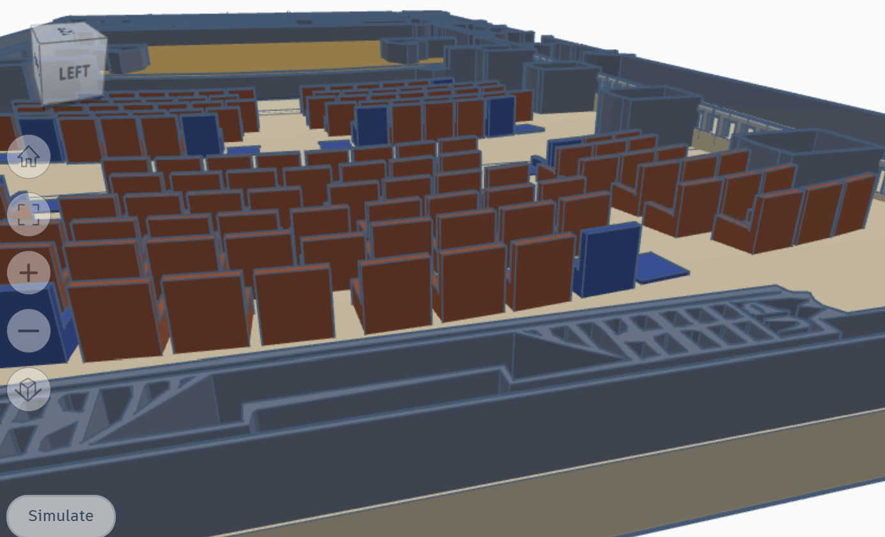

Project 1: Personal Portfolio Website

A personal website showcasing my skills, projects, and background in web development.
- Developed with HTML, CSS, and JavaScript
- Learned responsive design techniques
- Used GitHub Pages for hosting
Calculator

Developed a .NET application using C# (and Visual Studio) that functions as a scientific calculator, capable of sorting and searching user-inputted lists of numbers..
- Created custom implementations of sorting algorithms, including Quick Sort and Bubble Sort, to sort numbers in ascending order.
- Designed personalized searching algorithms, such as Linear Search and Binary Search, to determine if specific numbers exist within the list.
- Implemented customized arithmetic algorithms, including Geometric Mean and Harmonic Mean, for general scientific calculations.
Hart House Theatre Accessibility Enhancement

For this project, I worked alongside a multidisciplinary engineering team to identify and analyze accessibility barriers in the Hart House Theatre. Our objective was to propose innovative solutions to enhance the user experience and ensure compliance with accessibility standards.
- Collaborated with my team to assess current accessibility challenges and develop actionable insights for improvement.
- Proposed creative solutions that adhered to accessibility standards, showcasing my commitment to inclusive design.
- Gained valuable experience in project management and coordination, effectively managing timelines and contributing to project milestones.